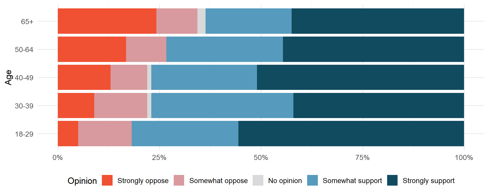

[1] 2 5 5 4 1 5 4 3 4 2 1 4 2 4 1 4 3 3 2 3 4 4 5 1 2 3 5 2 4 5ECON 2B03, Winter 2026
Part A | Lecture 3
Chris Muris, McMaster University
RR codequarto, just like your assignments:
##Example: Palmer penguins
# A tibble: 333 × 8
species island bill_length_mm bill_depth_mm flipper_length_mm body_mass_g
<fct> <fct> <dbl> <dbl> <int> <int>
1 Adelie Torgersen 39.1 18.7 181 3750
2 Adelie Torgersen 39.5 17.4 186 3800
3 Adelie Torgersen 40.3 18 195 3250
4 Adelie Torgersen 36.7 19.3 193 3450
5 Adelie Torgersen 39.3 20.6 190 3650
6 Adelie Torgersen 38.9 17.8 181 3625
7 Adelie Torgersen 39.2 19.6 195 4675
8 Adelie Torgersen 41.1 17.6 182 3200
9 Adelie Torgersen 38.6 21.2 191 3800
10 Adelie Torgersen 34.6 21.1 198 4400
# ℹ 323 more rows
# ℹ 2 more variables: sex <fct>, year <int><!– #| output-location: fragment #| output-location: column
–>
janitor/gt frequency table gave us both:R, there is usually multiple ways to compute something.table instead of tabyl:ggplotR using the wonderful ggplot packageR, at [https://r-graphics.org]ggplot cheat sheetspecies in the penguin data:| species | n | percent |
|---|---|---|
| Adelie | 146 | 0.4384384 |
| Chinstrap | 68 | 0.2042042 |
| Gentoo | 119 | 0.3573574 |
ggplot would be a course in itself<DATA> to the data set you are using<VARIABLE> to the variable for which you want to make a bar chartgeom_bar to geom_<TYPE> to make a different type of graphwage1, from the wooldridge package:# A tibble: 526 × 24
wage educ exper tenure nonwhite female married numdep smsa northcen south
<dbl> <int> <int> <int> <int> <int> <int> <int> <int> <int> <int>
1 3.10 11 2 0 0 1 0 2 1 0 0
2 3.24 12 22 2 0 1 1 3 1 0 0
3 3 11 2 0 0 0 0 2 0 0 0
4 6 8 44 28 0 0 1 0 1 0 0
5 5.30 12 7 2 0 0 1 1 0 0 0
6 8.75 16 9 8 0 0 1 0 1 0 0
7 11.2 18 15 7 0 0 0 0 1 0 0
8 5 12 5 3 0 1 0 0 1 0 0
9 3.60 12 26 4 0 1 0 2 1 0 0
10 18.2 17 22 21 0 0 1 0 1 0 0
# ℹ 516 more rows
# ℹ 13 more variables: west <int>, construc <int>, ndurman <int>,
# trcommpu <int>, trade <int>, services <int>, profserv <int>, profocc <int>,
# clerocc <int>, servocc <int>, lwage <dbl>, expersq <int>, tenursq <int>educ (years of education)loan50 data from the openintro package that comes with IMS.library(openintro)
data("loans_full_schema")
loans <- loans_full_schema |>
select(state, annual_income, verified_income, homeownership, application_type) |> drop_na() |>
filter(application_type %in% c("individual","joint")) |>
filter(homeownership %in% c("MORTGAGE","OWN","RENT")) |>
mutate(
application_type = fct_drop(application_type),
homeownership = fct_drop(homeownership),
homeownership = fct_recode(homeownership,
mortgage = "MORTGAGE",
own = "OWN",
rent = "RENT"
)
)
#?loan50application_type: is the loan application made by one person, or with a partner?homeownership: does the applicant (team) own their home, own with a mortgage, or do they rent?| homeownership | individual | joint |
|---|---|---|
| mortgage | 3839 | 950 |
| own | 1170 | 183 |
| rent | 3496 | 362 |
?tabyl or Google to find: homeownership individual joint Total
mortgage 3839 950 4789
own 1170 183 1353
rent 3496 362 3858
Total 8505 1495 10000gt for nice output:application_type) for a given value of homeownership| homeownership | individual | joint | Total |
|---|---|---|---|
| mortgage | 0.8016287 | 0.1983713 | 1 |
| own | 0.8647450 | 0.1352550 | 1 |
| rent | 0.9061690 | 0.0938310 | 1 |
| homeownership | individual | joint |
|---|---|---|
| mortgage | 0.4513815 | 0.6354515 |
| own | 0.1375661 | 0.1224080 |
| rent | 0.4110523 | 0.2421405 |
| Total | 1.0000000 | 1.0000000 |
Exercise: views on immigration
Nine-hundred and ten (910) randomly sampled registered voters from Tampa, FL were asked about views on immigration policy.
Use the contingency table below to answer the questions.
| Response | Conservative | Liberal | Moderate | Total |
|---|---|---|---|---|
| Apply for citizenship | 57 | 101 | 120 | 278 |
| Guest worker | 121 | 28 | 113 | 262 |
| Leave the country | 179 | 45 | 126 | 350 |
| Not sure | 15 | 1 | 4 | 20 |
| Total | 372 | 175 | 363 | 910 |
Exercise: Black Lives Matter poll
A June 2020 Washington Post–Schar School poll measured support for protests by age group.
Use the stacked bar plot to answer the questions.

These slides started from J. S. Racine’s slides for ECON2B03 at McMaster University.
Readings are from
References
Chang, Winston (2022), “R Graphics Cookbook”, 2nd edition, accessed at [https://r-graphics.org/]
Schwabish, Jonathan (2021), “Better data visualizations”, Columbia University Press, NY.
Wickham, Hadley, and Garrett Grolemund (2017), “R for Data Science”, accessed at [https://r4ds.had.co.nz]